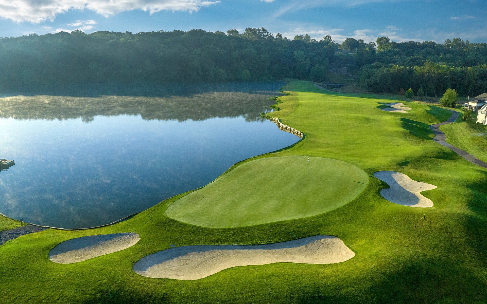

Overview
Why access to these sports matters
Golf and snow sports can build confidence, discipline, independence, and lifelong interests. Even so, many students never get the chance to participate because the entry cost is high and the path into the sport is unclear.
This website focuses on practical ways schools and communities can make those sports more realistic and welcoming for students who otherwise might be left out.

Goal
Creating more equal opportunities
The goal is not just to talk about barriers, but to show that access can be improved through partnerships, shared equipment, school-supported programs, and more beginner-friendly opportunities.
When more students can try these sports, schools expand not only participation, but also confidence, community, and opportunity.
Get Involved
Donate or receive equipment
Help expand access by donating gear or requesting equipment.
Go to Give / Get Page